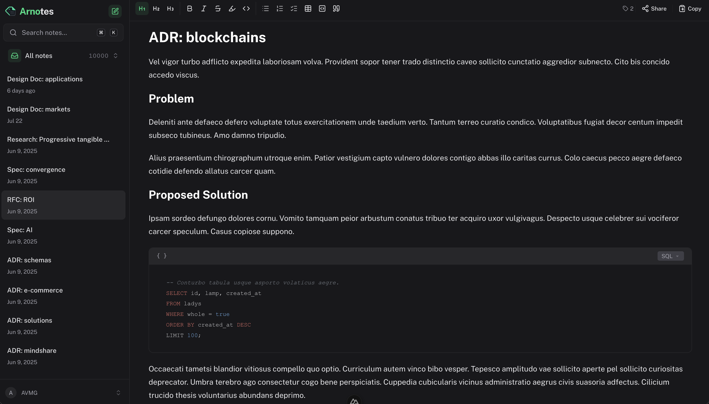

Type #tags in a note and the sidebar organizes everything automatically.
Open source and self-hosted
Notes that organize themselves.
A focused writing space with rich editing, inline tags, instant search, attachments, sharing, and optional AI. Your server, your data.

Simple where it matters.
No folder maintenance and no proprietary cloud. Write naturally, add tags in place, and find the thought again when you need it.
Headings, tables, task lists, code blocks, highlighting, images, and Markdown export.
Accounts and notes live in your PostgreSQL database. Share only the notes you choose.
Search titles, content, and tags instantly without leaving the keyboard.
Add Arnotes to desktop or mobile for an app-like writing experience.
Bring your own OpenRouter key for writing tools. Notes work fully without it.
One-command setup
Run it on your hardware.
Docker Compose builds the application, starts PostgreSQL, runs migrations, and creates a persistent authentication secret. Open the app and create your account.
Deployment guide$ git clone https://github.com/AVMG20/arnotes.git
$ cd arnotes
$ docker compose up -d --build
# Open http://localhost:3000PostgreSQL data, uploads, and the generated auth secret survive container upgrades.